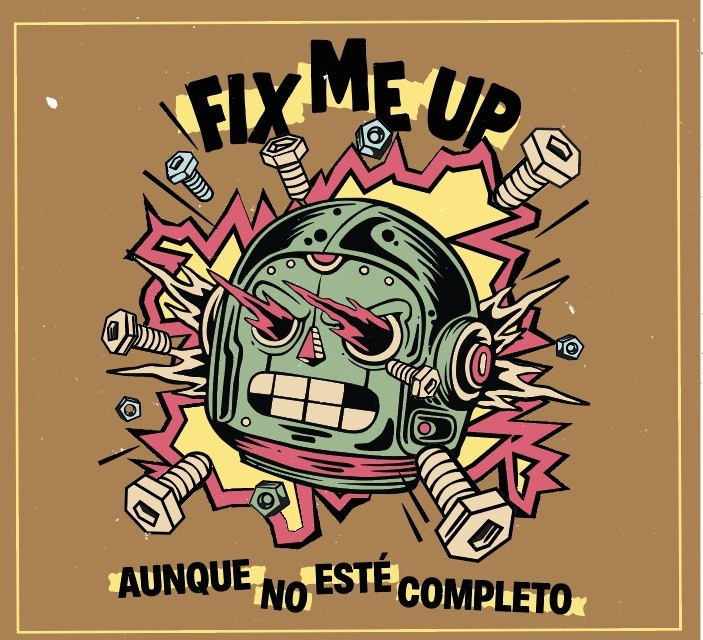

Fix Me
Up
Tijuana, Baja California, México — buscando sello, management y partnerships de marca
Press Release
FIX ME UP es una banda emergente originaria de Tijuana que está marcando su lugar dentro de la nueva ola del pop punk y rock alternativo en México. Con una propuesta energética, emocional y honesta, combina melodías pegajosas con letras que exploran el amor, la nostalgia y los conflictos internos de una generación que busca conectar a través de la música.
Formada por músicos con una visión clara y una fuerte identidad sonora, la banda ha construido una base sólida de seguidores gracias a sus lanzamientos digitales y presentaciones en vivo cargadas de intensidad — riffs dinámicos, coros memorables y una producción contemporánea que conecta tanto con audiencias nuevas como con fans del género.
"La música es una medicina en forma de arte." — Fix Me Up
FIX ME UP no es solamente una banda: es una declaración emocional para quienes alguna vez han intentado reparar aquello que parecía roto.

Aunque No Esté Completo
16 canciones que representan un paso decisivo en la evolución artística de la banda — reúne sencillos previamente lanzados junto con nueva música, consolidando una narrativa más madura sin perder la esencia cruda y directa que los caracteriza.
Tracklist
2026 Golden Breath Pro. Grabación, producción, mezcla y master por Julio Martínez en Golden Breath Recordings. Voces en el track "Treinta Once" grabadas por Erick Cisneros en Master Q Studios. Producción: Fix Me Up. Toda la música está compuesta por Fix Me Up.
Armando Cabrales · Julio Martínez · Hugo Ortiz · Yovani Villegas
Actividad en vivo
Aunque No Esté Completo Tour 2026
Primera gira nacional — arranca con la presentación oficial del álbum el 24 de abril y se extiende hasta diciembre. 12+ fechas entre México y una parada internacional en San Diego, California, llevando a la banda por primera vez a Guadalajara, CDMX, Puebla, Monterrey, Hermosillo, Reynosa y Culiacán.
Presentaciones previas al álbum — 2026
Presentaciones 2025
Galería


Contacto, prensa y booking
Con una identidad escénica auténtica y una propuesta emocionalmente intensa, FIX ME UP continúa consolidándose como uno de los proyectos emergentes más activos de la escena alternativa fronteriza.